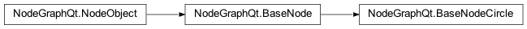

BaseNode¶
- class NodeGraphQt.BaseNode(qgraphics_item=None)¶
The
NodeGraphQt.BaseNodeclass is the base class for nodes that allows port connections from one node to another.
example snippet:
1from NodeGraphQt import BaseNode 2 3class ExampleNode(BaseNode): 4 5 # unique node identifier domain. 6 __identifier__ = 'io.jchanvfx.github' 7 8 # initial default node name. 9 NODE_NAME = 'My Node' 10 11 def __init__(self): 12 super(ExampleNode, self).__init__() 13 14 # create an input port. 15 self.add_input('in') 16 17 # create an output port. 18 self.add_output('out')
- add_checkbox(name, label='', text='', state=False, tab=None)¶
Creates a custom property with the
NodeObject.create_property()function and embeds aPySide2.QtWidgets.QCheckBoxwidget into the node.Note
The
value_changedsignal from the added node widget is wired up to theNodeObject.set_property()function.- Parameters
name (str) – name for the custom property.
label (str) – label to be displayed.
text (str) – checkbox text.
state (bool) – pre-check.
tab (str) – name of the widget tab to display in.
Creates a custom property with the
NodeObject.create_property()function and embeds aPySide2.QtWidgets.QComboBoxwidget into the node.Note
The
value_changedsignal from the added node widget is wired up to theNodeObject.set_property()function.- Parameters
name (str) – name for the custom property.
label (str) – label to be displayed.
items (list[str]) – items to be added into the menu.
tab (str) – name of the widget tab to display in.
- add_custom_widget(widget, widget_type=None, tab=None)¶
Add a custom node widget into the node.
see example Embedding Custom Widgets.
Note
The
value_changedsignal from the added node widget is wired up to theNodeObject.set_property()function.- Parameters
widget (NodeBaseWidget) – node widget class object.
widget_type – widget flag to display in the
NodeGraphQt.PropertiesBinWidget(default:NodeGraphQt.constants.NodePropWidgetEnum.HIDDEN).tab (str) – name of the widget tab to display in.
- add_input(name='input', multi_input=False, display_name=True, color=None, locked=False, painter_func=None)¶
Add input
Portto node.Warning
Undo is NOT supported for this function.
- Parameters
name (str) – name for the input port.
multi_input (bool) – allow port to have more than one connection.
display_name (bool) – display the port name on the node.
color (tuple) – initial port color (r, g, b)
0-255.locked (bool) – locked state see
Port.set_locked()painter_func (function or None) – custom function to override the drawing of the port shape see example: Creating Custom Shapes
- Returns
the created port object.
- Return type
- add_output(name='output', multi_output=True, display_name=True, color=None, locked=False, painter_func=None)¶
Add output
Portto node.Warning
Undo is NOT supported for this function.
- Parameters
name (str) – name for the output port.
multi_output (bool) – allow port to have more than one connection.
display_name (bool) – display the port name on the node.
color (tuple) – initial port color (r, g, b)
0-255.locked (bool) – locked state see
Port.set_locked()painter_func (function or None) – custom function to override the drawing of the port shape see example: Creating Custom Shapes
- Returns
the created port object.
- Return type
- add_text_input(name, label='', text='', tab=None)¶
Creates a custom property with the
NodeObject.create_property()function and embeds aPySide2.QtWidgets.QLineEditwidget into the node.Note
The
value_changedsignal from the added node widget is wired up to theNodeObject.set_property()function.- Parameters
name (str) – name for the custom property.
label (str) – label to be displayed.
text (str) – pre filled text.
tab (str) – name of the widget tab to display in.
- connected_input_nodes()¶
Returns all nodes connected from the input ports.
- Returns
{<input_port>: <node_list>}
- Return type
dict
- connected_output_nodes()¶
Returns all nodes connected from the output ports.
- Returns
{<output_port>: <node_list>}
- Return type
dict
- delete_input(port)¶
Delete input port.
Warning
Undo is NOT supported for this function.
You can only delete ports if
BaseNode.port_deletion_allowed()returnsTrueotherwise a port error is raised see alsoBaseNode.set_port_deletion_allowed().- Parameters
port (str or int) – port name or index.
- delete_output(port)¶
Delete output port.
Warning
Undo is NOT supported for this function.
You can only delete ports if
BaseNode.port_deletion_allowed()returnsTrueotherwise a port error is raised see alsoBaseNode.set_port_deletion_allowed().- Parameters
port (str or int) – port name or index.
- get_input(port)¶
Get input port by the name or index.
- Parameters
port (str or int) – port name or index.
- Returns
node port.
- Return type
- get_output(port)¶
Get output port by the name or index.
- Parameters
port (str or int) – port name or index.
- Returns
node port.
- Return type
- get_widget(name)¶
Returns the embedded widget associated with the property name.
- Parameters
name (str) – node property name.
- Returns
embedded node widget.
- Return type
- icon()¶
Node icon path.
- Returns
icon image file path.
- Return type
str
- input(index)¶
Return the input port with the matching index.
- Parameters
index (int) – index of the input port.
- Returns
port object.
- Return type
- input_ports()¶
Return all input ports.
- Returns
node input ports.
- Return type
list[NodeGraphQt.Port]
- inputs()¶
Returns all the input ports from the node.
- Returns
{<port_name>: <port_object>}
- Return type
dict
- on_input_connected(in_port, out_port)¶
Callback triggered when a new pipe connection is made.
The default of this function does nothing re-implement if you require logic to run for this event.
Note
to work with undo & redo for this method re-implement
BaseNode.on_input_disconnected()with the reverse logic.- Parameters
in_port (NodeGraphQt.Port) – source input port from this node.
out_port (NodeGraphQt.Port) – output port that connected to this node.
- on_input_disconnected(in_port, out_port)¶
Callback triggered when a pipe connection has been disconnected from a INPUT port.
The default of this function does nothing re-implement if you require logic to run for this event.
Note
to work with undo & redo for this method re-implement
BaseNode.on_input_connected()with the reverse logic.- Parameters
in_port (NodeGraphQt.Port) – source input port from this node.
out_port (NodeGraphQt.Port) – output port that was disconnected.
- output(index)¶
Return the output port with the matching index.
- Parameters
index (int) – index of the output port.
- Returns
port object.
- Return type
- output_ports()¶
Return all output ports.
- Returns
node output ports.
- Return type
list[NodeGraphQt.Port]
- outputs()¶
Returns all the output ports from the node.
- Returns
{<port_name>: <port_object>}
- Return type
dict
- port_deletion_allowed()¶
Return true if ports can be deleted on this node.
See also
- Returns
true if ports can be deleted.
- Return type
bool
- set_icon(icon=None)¶
Set the node icon.
- Parameters
icon (str) – path to the icon image.
- set_input(index, port)¶
Creates a connection pipe to the targeted output
Port.- Parameters
index (int) – index of the port.
port (NodeGraphQt.Port) – port object.
- set_output(index, port)¶
Creates a connection pipe to the targeted input
Port.- Parameters
index (int) – index of the port.
port (NodeGraphQt.Port) – port object.
- set_port_deletion_allowed(mode=False)¶
Allow ports to be removable on this node.
See also
- Parameters
mode (bool) – true to allow.
- set_ports(port_data)¶
Create node input and output ports from serialized port data.
Warning
You can only use this function if the node has
BaseNode.port_deletion_allowed()is True seeBaseNode.set_port_deletion_allowed()Hint
example snippet of port data.
{ 'input_ports': [{ 'name': 'input', 'multi_connection': True, 'display_name': 'Input', 'locked': False }], 'output_ports': [{ 'name': 'output', 'multi_connection': True, 'display_name': 'Output', 'locked': False }] }
- Parameters
port_data (dict) – port data.
- widgets()¶
Returns all embedded widgets from this node.
See also
- Returns
embedded node widgets. {
property_name:node_widget}- Return type
dict
BaseNode (Circle)¶
- class NodeGraphQt.BaseNodeCircle(qgraphics_item=None)¶
Implemented in
v0.5.2The
NodeGraphQt.BaseNodeCircleis pretty much the same class as theNodeGraphQt.BaseNodeexcept with a different design.
example snippet:
1from NodeGraphQt import BaseNodeCircle 2 3class ExampleNode(BaseNodeCircle): 4 5 # unique node identifier domain. 6 __identifier__ = 'io.jchanvfx.github' 7 8 # initial default node name. 9 NODE_NAME = 'My Node' 10 11 def __init__(self): 12 super(ExampleNode, self).__init__() 13 14 # create an input port. 15 self.add_input('in') 16 17 # create an output port. 18 self.add_output('out')